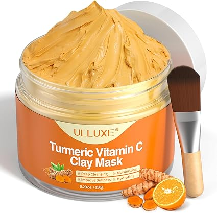

Infused with the natural goodness of turmeric and Vitamin C, this rejuvenating clay mask is your go-to skincare solution for clearer, brighter, and deeply hydrated skin. Designed for all skin types, the mask targets clogged pores, dullness, and dryness in one refreshing application. With a rich, golden hue and creamy texture, it feels as luxurious as it looks. Use it weekly to maintain a youthful glow and refreshed complexion. Bonus: It smells amazing and feels like a spa in a jar!
Turmeric is known for its powerful anti-inflammatory and antioxidant properties. When applied to the skin, it helps reduce redness, fight acne-causing bacteria, and enhance natural radiance. Paired with Vitamin C, this clay mask delivers double the skin-brightening power!
Enjoy an at-home spa ritual with these simple steps.
Cleanse your face — Start with a clean face. Gently pat dry with a soft towel before applying the mask.
Apply the mask — Spread an even layer over your clean face, avoiding the eye and lip areas. Relax and let it work for 10-15 minutes.
Rinse thoroughly — Gently rinse with warm water, massaging in circular motions to exfoliate. Pat your skin dry.
Follow with moisturizer — For best results, follow up with your favorite moisturizer to lock in hydration.